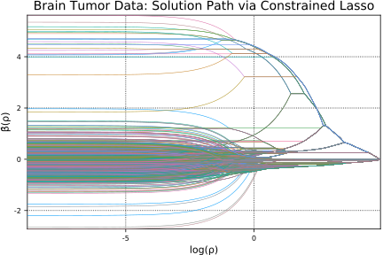
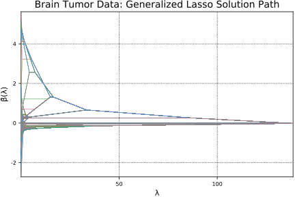

Brain Tumor Data
Here we estimate a generalized lasso model (sparse fused lasso) via the constrained lasso.
In this example, we use a version of the comparative genomic hybridization (CGH) data from Bredel et al. (2005) that was modified and studied by Tibshirani and Wang (2008)
The dataset here contains CGH measurements from 2 glioblastoma multiforme (GBM) brain tumors. Tibshirani and Wang (2008) proposed using the sparse fused lasso to approximate the CGH signal by a sparse, piecewise constant function in order to determine the areas with non-zero values, as positive (negative) CGH values correspond to possible gains (losses). The sparse fused lasso (Tibshirani et al., 2005) is given by
The sparse fused lasso is a special case of the generalized lasso with the penalty matrix. Therefore, the problem $(1)$ is equivalent to the following:
where
$$ \boldsymbol{D} = \in \mathbb{R}^{(2P-1)\times p}.
$$
As discussed in Gaines, B.R. and Zhou, H., (2016), the sparse fused lasso can be reformulated and solved as a constrained lasso problem. The generalized lasso problem $(2)$ is equivalent to
where $\widetilde{\boldsymbol{y}} = (\boldsymbol{I}-\boldsymbol{P}{\boldsymbol{XV}_2})\boldsymbol{y}, \hspace{0.5em} \widetilde{\boldsymbol{X}} = (\boldsymbol{I}-\boldsymbol{P}_2})\boldsymbol{XD}^+$. Note $D^+$ is the Moore-Penrose inverse of the matrix $\boldsymbol{D}.$ and $\boldsymbol{U_2}, \boldsymbol{V_2}$ are obtained from singular value decomposition (SVD) of $\boldsymbol{D}$ matrix. Then, the solution path $\widehat{\boldsymbol{\alpha}}(\rho)$ can be translated back to that of the original generalized lasso problem via
where $\boldsymbol{X}^-$ denotes the generalized inverse of a matrix $\boldsymbol{X}$.
Details are found in Section 2 of [3].
using ConstrainedLasso
We load and organize the data first. Here, y is the response vector. The design matrix X is an identity matrix since the objective function in $(1)$ does not involve X.
y = readdlm("misc/tumor.txt")
990×1 Array{Float64,2}:
0.333661
-0.152838
0.101485
-0.0342123
0.344761
0.151108
0.798318
0.282754
0.116233
-0.232173
-0.754577
1.06762
-0.017392
⋮
-0.170825
-0.161826
-0.348987
-0.001227
-0.221422
0.552795
-0.603429
-0.447907
-0.317569
-0.728202
-0.505593
-0.147661
n = p = size(y, 1) X = eye(n)
990×990 Array{Float64,2}:
1.0 0.0 0.0 0.0 0.0 0.0 0.0 0.0 … 0.0 0.0 0.0 0.0 0.0 0.0 0.0
0.0 1.0 0.0 0.0 0.0 0.0 0.0 0.0 0.0 0.0 0.0 0.0 0.0 0.0 0.0
0.0 0.0 1.0 0.0 0.0 0.0 0.0 0.0 0.0 0.0 0.0 0.0 0.0 0.0 0.0
0.0 0.0 0.0 1.0 0.0 0.0 0.0 0.0 0.0 0.0 0.0 0.0 0.0 0.0 0.0
0.0 0.0 0.0 0.0 1.0 0.0 0.0 0.0 0.0 0.0 0.0 0.0 0.0 0.0 0.0
0.0 0.0 0.0 0.0 0.0 1.0 0.0 0.0 … 0.0 0.0 0.0 0.0 0.0 0.0 0.0
0.0 0.0 0.0 0.0 0.0 0.0 1.0 0.0 0.0 0.0 0.0 0.0 0.0 0.0 0.0
0.0 0.0 0.0 0.0 0.0 0.0 0.0 1.0 0.0 0.0 0.0 0.0 0.0 0.0 0.0
0.0 0.0 0.0 0.0 0.0 0.0 0.0 0.0 0.0 0.0 0.0 0.0 0.0 0.0 0.0
0.0 0.0 0.0 0.0 0.0 0.0 0.0 0.0 0.0 0.0 0.0 0.0 0.0 0.0 0.0
0.0 0.0 0.0 0.0 0.0 0.0 0.0 0.0 … 0.0 0.0 0.0 0.0 0.0 0.0 0.0
0.0 0.0 0.0 0.0 0.0 0.0 0.0 0.0 0.0 0.0 0.0 0.0 0.0 0.0 0.0
0.0 0.0 0.0 0.0 0.0 0.0 0.0 0.0 0.0 0.0 0.0 0.0 0.0 0.0 0.0
⋮ ⋮ ⋱ ⋮
0.0 0.0 0.0 0.0 0.0 0.0 0.0 0.0 0.0 0.0 0.0 0.0 0.0 0.0 0.0
0.0 0.0 0.0 0.0 0.0 0.0 0.0 0.0 0.0 0.0 0.0 0.0 0.0 0.0 0.0
0.0 0.0 0.0 0.0 0.0 0.0 0.0 0.0 … 0.0 0.0 0.0 0.0 0.0 0.0 0.0
0.0 0.0 0.0 0.0 0.0 0.0 0.0 0.0 0.0 0.0 0.0 0.0 0.0 0.0 0.0
0.0 0.0 0.0 0.0 0.0 0.0 0.0 0.0 0.0 0.0 0.0 0.0 0.0 0.0 0.0
0.0 0.0 0.0 0.0 0.0 0.0 0.0 0.0 1.0 0.0 0.0 0.0 0.0 0.0 0.0
0.0 0.0 0.0 0.0 0.0 0.0 0.0 0.0 0.0 1.0 0.0 0.0 0.0 0.0 0.0
0.0 0.0 0.0 0.0 0.0 0.0 0.0 0.0 … 0.0 0.0 1.0 0.0 0.0 0.0 0.0
0.0 0.0 0.0 0.0 0.0 0.0 0.0 0.0 0.0 0.0 0.0 1.0 0.0 0.0 0.0
0.0 0.0 0.0 0.0 0.0 0.0 0.0 0.0 0.0 0.0 0.0 0.0 1.0 0.0 0.0
0.0 0.0 0.0 0.0 0.0 0.0 0.0 0.0 0.0 0.0 0.0 0.0 0.0 1.0 0.0
0.0 0.0 0.0 0.0 0.0 0.0 0.0 0.0 0.0 0.0 0.0 0.0 0.0 0.0 1.0
First we create a penalty matrix D.
D = [eye(p-1) zeros(p-1, 1)] - [zeros(p-1, 1) eye(p-1)]
989×990 Array{Float64,2}:
1.0 -1.0 0.0 0.0 0.0 0.0 … 0.0 0.0 0.0 0.0 0.0 0.0
0.0 1.0 -1.0 0.0 0.0 0.0 0.0 0.0 0.0 0.0 0.0 0.0
0.0 0.0 1.0 -1.0 0.0 0.0 0.0 0.0 0.0 0.0 0.0 0.0
0.0 0.0 0.0 1.0 -1.0 0.0 0.0 0.0 0.0 0.0 0.0 0.0
0.0 0.0 0.0 0.0 1.0 -1.0 0.0 0.0 0.0 0.0 0.0 0.0
0.0 0.0 0.0 0.0 0.0 1.0 … 0.0 0.0 0.0 0.0 0.0 0.0
0.0 0.0 0.0 0.0 0.0 0.0 0.0 0.0 0.0 0.0 0.0 0.0
0.0 0.0 0.0 0.0 0.0 0.0 0.0 0.0 0.0 0.0 0.0 0.0
0.0 0.0 0.0 0.0 0.0 0.0 0.0 0.0 0.0 0.0 0.0 0.0
0.0 0.0 0.0 0.0 0.0 0.0 0.0 0.0 0.0 0.0 0.0 0.0
0.0 0.0 0.0 0.0 0.0 0.0 … 0.0 0.0 0.0 0.0 0.0 0.0
0.0 0.0 0.0 0.0 0.0 0.0 0.0 0.0 0.0 0.0 0.0 0.0
0.0 0.0 0.0 0.0 0.0 0.0 0.0 0.0 0.0 0.0 0.0 0.0
⋮ ⋮ ⋱ ⋮
0.0 0.0 0.0 0.0 0.0 0.0 0.0 0.0 0.0 0.0 0.0 0.0
0.0 0.0 0.0 0.0 0.0 0.0 0.0 0.0 0.0 0.0 0.0 0.0
0.0 0.0 0.0 0.0 0.0 0.0 0.0 0.0 0.0 0.0 0.0 0.0
0.0 0.0 0.0 0.0 0.0 0.0 … 0.0 0.0 0.0 0.0 0.0 0.0
0.0 0.0 0.0 0.0 0.0 0.0 0.0 0.0 0.0 0.0 0.0 0.0
0.0 0.0 0.0 0.0 0.0 0.0 0.0 0.0 0.0 0.0 0.0 0.0
0.0 0.0 0.0 0.0 0.0 0.0 -1.0 0.0 0.0 0.0 0.0 0.0
0.0 0.0 0.0 0.0 0.0 0.0 1.0 -1.0 0.0 0.0 0.0 0.0
0.0 0.0 0.0 0.0 0.0 0.0 … 0.0 1.0 -1.0 0.0 0.0 0.0
0.0 0.0 0.0 0.0 0.0 0.0 0.0 0.0 1.0 -1.0 0.0 0.0
0.0 0.0 0.0 0.0 0.0 0.0 0.0 0.0 0.0 1.0 -1.0 0.0
0.0 0.0 0.0 0.0 0.0 0.0 0.0 0.0 0.0 0.0 1.0 -1.0
Now we transform the problem to the constrained lasso problem. We do the singular value decomposition on D and extract singular values and necessary submatrices.
m = size(D, 1) F = svdfact!(D, thin = false) singvals = F[:S] rankD = countnz(F[:S] .> abs(F[:S][1]) * eps(F[:S][1]) * maximum(size(D))) V1 = F[:V][:, 1:rankD] V2 = F[:V][:, rankD+1:end] U1 = F[:U][:, 1:rankD] U2 = F[:U][:, rankD+1:end];
Now we calculate the Moore-Penrose inverse of D, which is $D^+$ in $(3)$, and transform the design matrix by multiplying by $D^+$.
Dplus = V1 * broadcast(*, U1', 1./F[:S]) XDplus = X * Dplus;
In the following code snippet, Pxv2 is a projection matrix onto C(XV2) and Mxv2 is the orthogonal projection matrix. Then we obtain the design matrix and response vector in their tilde form as shown in $(3)$.
XV2 = X * V2 Pxv2 = (1 / dot(XV2, XV2)) * A_mul_Bt(XV2, XV2) Mxv2 = eye(size(XV2, 1)) - Pxv2 ỹ = vec(Mxv2 * y)
990-element Array{Float64,1}:
0.351554
-0.134946
0.119377
-0.0163198
0.362654
0.169001
0.816211
0.300646
0.134125
-0.214281
-0.736685
1.08552
0.000500562
⋮
-0.152933
-0.143933
-0.331094
0.0166656
-0.203529
0.570688
-0.585536
-0.430014
-0.299676
-0.71031
-0.487701
-0.129769
X̃ = Mxv2 * XDplus
990×989 Array{Float64,2}:
0.99899 0.99798 0.99697 … 0.0030303 0.0020202 0.0010101
-0.0010101 0.99798 0.99697 0.0030303 0.0020202 0.0010101
-0.0010101 -0.0020202 0.99697 0.0030303 0.0020202 0.0010101
-0.0010101 -0.0020202 -0.0030303 0.0030303 0.0020202 0.0010101
-0.0010101 -0.0020202 -0.0030303 0.0030303 0.0020202 0.0010101
-0.0010101 -0.0020202 -0.0030303 … 0.0030303 0.0020202 0.0010101
-0.0010101 -0.0020202 -0.0030303 0.0030303 0.0020202 0.0010101
-0.0010101 -0.0020202 -0.0030303 0.0030303 0.0020202 0.0010101
-0.0010101 -0.0020202 -0.0030303 0.0030303 0.0020202 0.0010101
-0.0010101 -0.0020202 -0.0030303 0.0030303 0.0020202 0.0010101
-0.0010101 -0.0020202 -0.0030303 … 0.0030303 0.0020202 0.0010101
-0.0010101 -0.0020202 -0.0030303 0.0030303 0.0020202 0.0010101
-0.0010101 -0.0020202 -0.0030303 0.0030303 0.0020202 0.0010101
⋮ ⋱
-0.0010101 -0.0020202 -0.0030303 0.0030303 0.0020202 0.0010101
-0.0010101 -0.0020202 -0.0030303 0.0030303 0.0020202 0.0010101
-0.0010101 -0.0020202 -0.0030303 … 0.0030303 0.0020202 0.0010101
-0.0010101 -0.0020202 -0.0030303 0.0030303 0.0020202 0.0010101
-0.0010101 -0.0020202 -0.0030303 0.0030303 0.0020202 0.0010101
-0.0010101 -0.0020202 -0.0030303 0.0030303 0.0020202 0.0010101
-0.0010101 -0.0020202 -0.0030303 0.0030303 0.0020202 0.0010101
-0.0010101 -0.0020202 -0.0030303 … 0.0030303 0.0020202 0.0010101
-0.0010101 -0.0020202 -0.0030303 0.0030303 0.0020202 0.0010101
-0.0010101 -0.0020202 -0.0030303 -0.99697 0.0020202 0.0010101
-0.0010101 -0.0020202 -0.0030303 -0.99697 -0.99798 0.0010101
-0.0010101 -0.0020202 -0.0030303 -0.99697 -0.99798 -0.99899
We solve the constrained lasso problem and obtain $\widehat{\boldsymbol{\alpha}}(\rho)$.
α̂path, ρpath, = lsq_classopath(X̃, ỹ; solver=solver)
Now we need to transform $\widehat{\boldsymbol{\alpha}} (\rho)$ back to $\widehat{\boldsymbol{\beta}} (\rho)$ as seen in (3).
# transform back to beta β̂path = Base.LinAlg.BLAS.ger!(1.0, vec(V2 * ((1 / dot(XV2, XV2)) * At_mul_B(XV2, y))), ones(size(ρpath)), (eye(size(V2, 1)) - V2 * ((1 / dot(XV2, XV2)) * At_mul_B(XV2, X))) * Dplus * α̂path )
990×989 Array{Float64,2}:
-0.0178926 -0.0046696 0.118695 0.258754 … 0.333516 0.333644
-0.0178926 -0.0046696 0.118695 0.258754 -0.152548 -0.152803
-0.0178926 -0.0046696 0.118695 0.258754 0.101194 0.10145
-0.0178926 -0.0046696 0.118695 0.258754 -0.0339217 -0.0341772
-0.0178926 -0.0046696 0.118695 0.258754 0.34447 0.344726
-0.0178926 -0.0046696 0.118695 0.258754 … 0.151399 0.151143
-0.0178926 -0.0046696 0.118695 0.258754 0.798027 0.798283
-0.0178926 -0.0046696 0.118695 0.258754 0.282754 0.282754
-0.0178926 -0.0046696 0.118695 0.258754 0.116233 0.116233
-0.0178926 -0.0046696 0.118695 0.258754 -0.232173 -0.232173
-0.0178926 -0.0046696 0.118695 0.258754 … -0.754287 -0.754542
-0.0178926 -0.0046696 0.118695 0.258754 1.06733 1.06759
-0.0178926 -0.0046696 0.118695 0.258754 -0.0171014 -0.0173569
⋮ ⋱
-0.0178926 -0.0212612 -0.0504995 -0.0838215 -0.170534 -0.17079
-0.0178926 -0.0212612 -0.0504995 -0.0838215 -0.162116 -0.161861
-0.0178926 -0.0212612 -0.0504995 -0.0838215 … -0.348696 -0.348952
-0.0178926 -0.0212612 -0.0504995 -0.0838215 -0.00151764 -0.00126215
-0.0178926 -0.0212612 -0.0504995 -0.0838215 -0.221131 -0.221386
-0.0178926 -0.0212612 -0.0504995 -0.0838215 0.552504 0.55276
-0.0178926 -0.0212612 -0.0504995 -0.0838215 -0.603138 -0.603394
-0.0178926 -0.0212612 -0.0504995 -0.0838215 … -0.447907 -0.447907
-0.0178926 -0.0212612 -0.0504995 -0.0838215 -0.31786 -0.317604
-0.0178926 -0.0212612 -0.0504995 -0.0838215 -0.727912 -0.728167
-0.0178926 -0.0212612 -0.0504995 -0.0838215 -0.505593 -0.505593
-0.0178926 -0.0212612 -0.0504995 -0.0838215 -0.147807 -0.147679
We plot the constrained lasso solution path below.
using Plots; pyplot(); # hide plot(ρpath, β̂path', label="", xaxis = ("ρ", (minimum(ρpath), maximum(ρpath))), yaxis = ("β̂(ρ)"), width=0.5) title!("Brain Tumor Data: Solution Path via Constrained Lasso")

Now let's compare our estimates with those from generalized lasso.
Variables lambda_path and beta_path_fused are lambda values and estimated beta coefficients, respectively, obtained from genlasso package in R.
lambda_path = readdlm("misc/lambda_path.txt") beta_path_fused = readdlm("misc/beta_path_fused.txt")[2:end, :]
The following figure plots generalized lasso solution path.
plot(lambda_path, beta_path_fused', label="", xaxis = ("λ", (minimum(lambda_path), maximum(lambda_path))), yaxis = ("β̂(λ)"), width=0.5) title!("Brain Tumor Data: Generalized Lasso Solution Path")

Now we extract common values of $\rho$ and compare estimates at those values.
sameρ = intersect(round.(ρpath, 4), round.(lambda_path, 4)) sameρ_err = [] for i in eachindex(sameρ) curρ = sameρ[i] idx1 = findmin(abs.(ρpath - curρ))[2] idx2 = findmin(abs.(lambda_path - curρ))[2] push!(sameρ_err, maximum(abs.(β̂path[:, idx1] - beta_path_fused[:, idx2]))) end sameρ_err
988-element Array{Any,1}:
1.22121e-9
2.47148e-9
4.33354e-9
4.3335e-9
3.64469e-8
4.41366e-8
3.35e-8
4.53911e-8
4.29568e-7
3.18004e-7
4.94452e-7
2.62003e-7
3.8775e-7
⋮
5.00008e-7
4.89495e-7
4.87999e-7
4.95e-7
4.78989e-7
4.86001e-7
4.96003e-7
4.99498e-7
4.86994e-7
4.86994e-7
4.89997e-7
4.83994e-7
Below are the mean, median, and maximum of the errors between estimated coefficients at common $\rho$ values.
println([mean(sameρ_err); median(sameρ_err); maximum(sameρ_err)])
[4.77914e-7, 4.80866e-7, 5.00013e-7]
Follow this link to access the .ipynb file of this page.